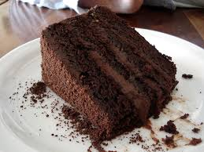

Chocolate Cake

Description
The absolute best, richest, and easiest one-bowl chocolate cake recipe ever! It's great topped with chocolate cream cheese frosting!
Ingredients
- 2 cups all-purpose flour
- 2 cups white sugar
- 3/4 cup unsweetened cocoa
- 2 tsp baking soda
- 1 tsp baking powder
- 1/2 tsp salt
- 2 eggs
- 1 cup cold brewed coffee
- 1 cup milk
- 1/2 cup vegetable oil
- 2 tsp vinegar
Steps
- Preheat oven to 350 °F (175 °C). Grease and flour a 9x13-inch pan
- In a large bowl, combine the flour, sugar, cocoa, baking soda, baking powder and salt. Make a well in the center and pour in the eggs, coffee, milk, oil and vinegar. Mix until smooth; the batter will be thin. Pour the batter into the prepared pan
- Bake in the preheated oven for 35 to 40 minutes, or until a toothpick inserted into the center of the cake comes out clean. Allow to cool
Credits
Recipe created by Kelly Smith; original is found here
Home